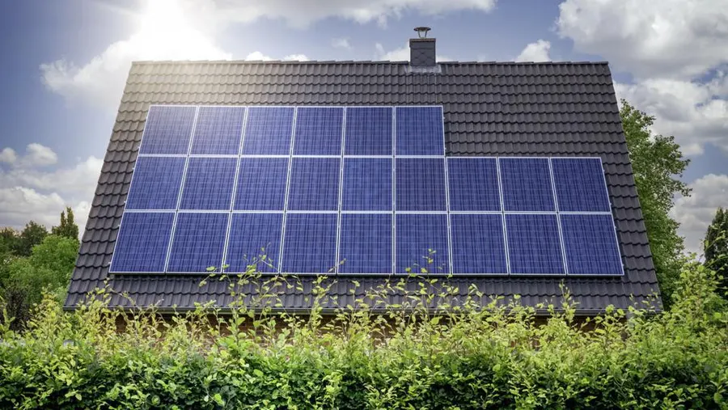
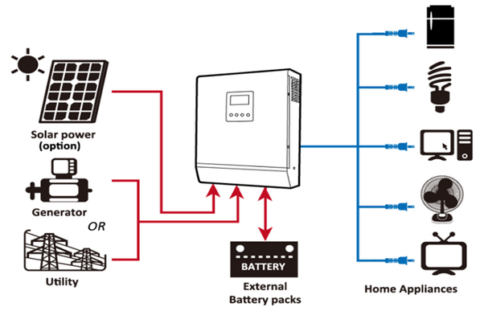

Was ist Solarenergie?
Solarenergie stammt aus der Strahlung der Sonne und kann in Elektrizität umgewandelt oder für thermische Zwecke genutzt werden. Sie ist eine der saubersten und umweltfreundlichsten Energiequellen.
Vorteile der Solarenergie

Die Solarenergie bietet zahlreiche Vorteile, die nicht nur dem Planeten, sondern auch Ihrer Stromrechnung zugutekommen. Sie reduziert die Abhängigkeit von fossilen Brennstoffen und fördert eine nachhaltige Energiezukunft.
Wie Solarmodule funktionieren
Solarmodule wandeln die Energie der Sonne in Gleichstrom (DC) um. Mit Hilfe eines Wechselrichters wird dieser Gleichstrom in Wechselstrom (AC) umgewandelt, der dann für den Hausgebrauch genutzt werden kann.
Installationsprozess für Solarmodule

Die Installation von Solarmodulen umfasst mehrere wichtige Schritte: Bewertung des Energiebedarfs, Standortanalyse, Installation der Hardware und Anschluss an das Stromnetz.
Häufig gestellte Fragen
F: Wie lange halten Solarmodule?
A: Solarmodule sind sehr langlebig und können über 25 Jahre effizient arbeiten.
F: Kann ich mein ganzes Haus mit Solarenergie betreiben?
A: Ja, mit dem richtigen System können Sie vollständig unabhängig von der Netzstromversorgung sein.